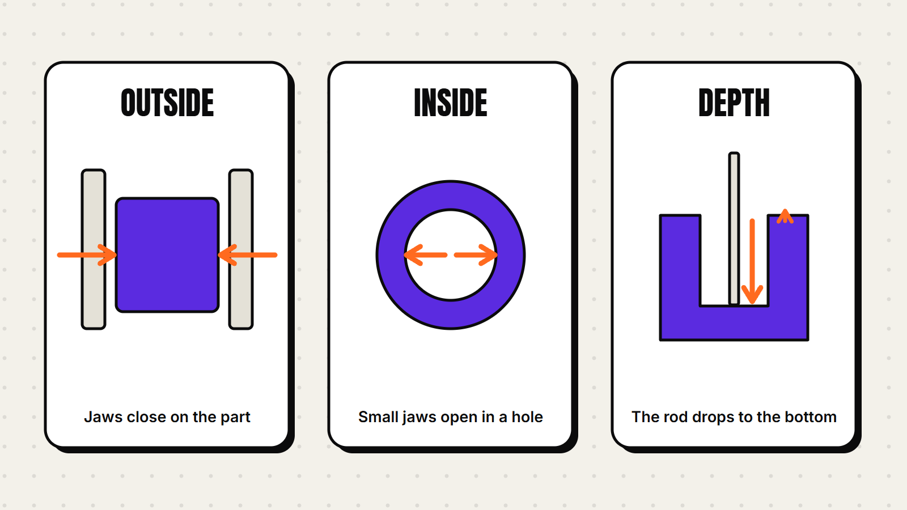
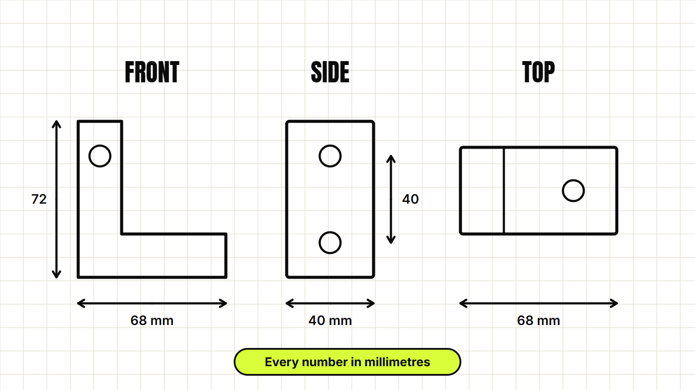

A snapped clip, a lost knob, a cracked bracket: small parts often stop a perfectly good object from working. A 3D printed replacement can bring it back, provided the new piece fits. Fit depends on measurements. This guide shows how to measure a broken part so that the person modelling it has what they need.
A vernier or digital caliper is the most useful tool. It measures outside widths, inside widths, and depths to a fraction of a millimetre. A steel ruler helps with longer distances. A phone camera records the shape, and graph paper helps trace outlines.

| Measurement | Why it matters |
|---|---|
| Overall length, width, height | Sets the size and space it fits into |
| Hole diameters | For screws, shafts, and pins |
| Distance between hole centres | So screws line up |
| Wall thickness | For strength and fit |
| Shaft shape | Round, flat-sided, square, or splined |
| Angles and curves | So it sits correctly against surfaces |
Measuring from centre to centre is hard by eye. Measure from the left edge of one hole to the left edge of the other, assuming both holes are the same size. That equals the centre distance.
Draw the part from the front, the side, and the top, even roughly. Write each measurement beside the line it describes. A sketch with numbers is far clearer than a list.

A broken part tells you where the design was weak. The replacement can add a thicker section, a rounded corner, or a stronger material. Tell the designer how it broke: sudden knock, slow crack, heat, or sunlight. Our guides to materials and orientation explain the choices.
Complex fits often need a small adjustment after the first print. Try it gently, note anything tight or loose, and report the difference in millimetres if you can. A second version is normal.
Copying a functional spare for your own use is a common request, yet some parts are protected by design rights or brand marks. Do not ask for logos or branding to be reproduced. Read copyright and 3D printing for the basics.
Tip: Put a coin or ruler in every photo. Scale is the thing most often missing.
Suppose a plastic bracket cracked. Measure the rod diameter, the depth the rod sits in, the distance from the wall to the centre of the rod, the plate height and width, and the spacing of the two screws. Note that it cracked at the bend, which suggests thicker material and a rounded inner corner there. Photograph the surviving bracket on the other side, straight on, with a ruler. With those details a replacement can match the original and be stronger where it failed.
If two brackets are on the wall, order two matching pieces, so the repair does not look odd beside the old one. Mention the colour, and ask for a sample first if the match matters.
A steel ruler and clear photos with the ruler in view are a start. A printed test piece can then confirm the fit, though it may take an extra round.
Often yes. Keep every fragment, and measure the mating part, which usually reveals the missing shape.
For a loose cosmetic cover, perhaps. For anything that must fit or hold, measurements are needed.
Filament colours are limited, so an exact match is not certain. Ask what is available, or plan to paint it.
Some features are fixed by the object around the part, such as screw spacing or a shaft shape. Others can change freely, such as the thickness of an arm or the shape of an outer edge. Marking which is which gives the designer room to strengthen the weak area without upsetting the fit, and it avoids a second round of corrections.
Send the sketch, photos, measurements, and a short note on use through the quote form. Choose "Design and print" if there is no 3D file yet. Our design service models the replacement and shows you a preview before anything is printed. If you can post or drop the broken part and its partner, say so in the note, because holding the pieces often answers questions that photographs cannot.